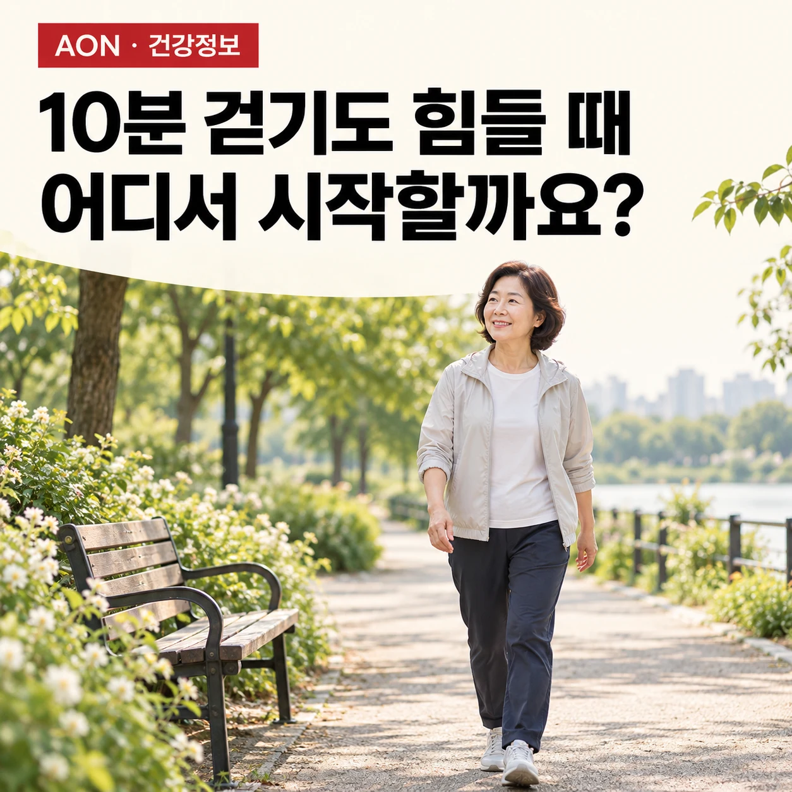
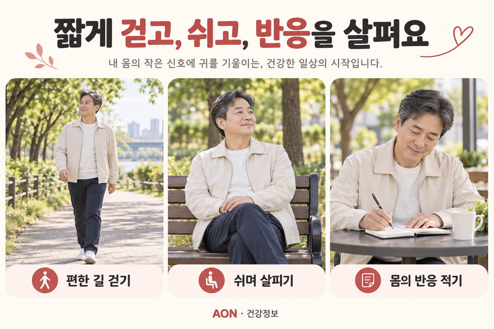

10분도 못 걷지만 걷고 싶어요. 어떻게 해야 하나요?
걷기 목표를 낮추는 것은 포기가 아닙니다. 무엇 때문에 멈추는지 확인하고, 내 생활에서 반복할 수 있는 출발점을 찾는 방법을 살펴봅니다.
걷기 · 활동 조절 ·

이 글에서 살펴볼 내용
먼저 물어볼 것은 ‘몇 분’보다 ‘왜 멈추는지’입니다
집 앞 가게에 다녀오거나 버스 정류장까지 걷는 일이 버거워지면 ‘체력이 너무 떨어졌나’라는 생각부터 들 수 있습니다. 하지만 10분을 못 걷는다는 사실만으로 의지 부족이나 운동 부족을 결론 내릴 수는 없습니다. 통증 때문에 멈추는지, 숨이 차서인지, 다리에 힘이 빠지거나 어지러워서인지에 따라 먼저 확인할 내용이 달라집니다.
오랫동안 활동량이 줄어 몸의 운동 능력이 떨어졌을 수도 있습니다. 하지만 이것은 가능한 설명 중 하나입니다. 숨참에는 심장·폐의 문제를 포함한 여러 원인이 있으므로, 평소보다 적은 활동에도 새롭게 숨이 차거나 제한이 심해진다면 운동량을 늘리기 전에 진료로 원인을 확인하세요.[3]
출발점을 찾을 때는 언제부터 어려웠는지, 어떤 증상으로 멈추는지, 쉬면 얼마나 나아지는지, 평지와 계단에서 차이가 있는지를 적어두면 좋습니다. ‘운동을 잘 못한다’보다 이런 구체적인 정보가 상담에 도움이 됩니다.
이런 신호가 있다면 걷기 연습보다 평가가 먼저입니다
걷다가 가슴이 조이거나 무겁고 숨쉬기가 심하게 어렵다면 즉시 멈추고 도움을 요청하세요. 말을 잇기 어려울 정도의 호흡곤란, 운동 중 실신, 갑자기 한쪽 얼굴·팔·다리에 생긴 힘 빠짐이나 말이 어눌해지는 증상은 국내에서는 119를 통한 응급 평가가 필요합니다. 잠깐 쉬어 좋아졌다는 이유로 그대로 운동을 재개하지 않습니다.[3] [4] [5]
응급 상황이 아니더라도 최근 걷는 능력이 뚜렷하게 감소했거나, 평소 생활에서도 숨참이 심해지거나, 새롭게 저림·힘 빠짐이 나타난다면 의료진과 먼저 상의하세요. 이미 심장·폐 질환 등으로 활동 지침을 받은 분은 그 지침을 우선합니다.
반대로 증상이 없는 모든 사람이 가벼운 활동을 시작하기 전에 검사를 받아야 한다는 뜻은 아닙니다. WHO 지침도 금기가 없는 사람의 점진적인 신체활동에 일률적인 사전 의료 허가를 요구하지 않습니다. 이 글에서 먼저 확인하자는 것은 설명되지 않는 증상과 변화입니다.[1]
10분을 연속으로 채워야만 운동이 되는 것은 아닙니다
WHO의 2020년 지침에서는 신체활동을 반드시 10분 이상씩 해야 한다는 기존 조건이 없어졌습니다. 활동이 적던 사람은 작은 양부터 시작해 점차 늘릴 수 있습니다. 성인의 주당 중강도 활동 150–300분은 장기적인 건강 목표이지, 오늘 처음 걷는 사람이 곧바로 채워야 할 할당량이 아닙니다.[1]
따라서 ‘10분 걷기 실패’ 대신 ‘지금 편하게 반복할 수 있는 시간’을 기준으로 잡아보세요. 목표 역시 하루 만 보나 달리기보다 ‘집 근처 편의점에 덜 힘들게 다녀오기’처럼 내가 실제로 원하는 생활로 정할 수 있습니다. 거리는 짧아도 의미 있는 목표가 됩니다.
다만 짧게 걷는 것에도 건강상 의미가 있다는 근거가, 원인을 모르는 모든 보행 곤란을 걷기만으로 치료할 수 있다는 뜻은 아닙니다. 일반 건강 지침과 개인의 진단·재활 계획은 구분해야 합니다.
짧은 걷기와 휴식을 나누어 출발점을 찾습니다
평가가 필요한 문제가 없고 가벼운 걷기가 가능한 상황이라면, 평탄하고 중간에 쉴 수 있는 가까운 길을 고릅니다. 처음부터 왕복 거리를 길게 잡기보다 쉽게 돌아올 수 있는 동선이 좋습니다. 신발, 날씨, 짐의 무게도 함께 생각해보세요.

예를 들어 2분 정도 천천히 걸어도 편안한 사람은 잠시 쉬며 호흡과 불편이 가라앉는지 확인하고, 상태가 괜찮을 때 한 번 더 걸어볼 수 있습니다. 이때 ‘2분’은 연구로 정해진 공통 처방이 아니라 나누어 걷는 방법을 설명하는 예시입니다. 어떤 사람에게는 더 짧은 시간이 필요하고, 어떤 사람에게는 연속 걷기가 더 편합니다.
그날 가능한 시간을 끝까지 시험하거나 통증을 참고 목표를 채울 필요는 없습니다. 걷기·휴식 뒤의 반응을 보고 시작량을 조정하세요. 매우 가벼운 활동에도 설명하기 어려운 심한 피로나 증상 악화가 오래 지속되면, 정해둔 계획대로 양을 늘리지 말고 상태를 다시 평가받는 편이 좋습니다.
속도계보다 대화와 몸의 반응을 함께 봅니다
같은 속도로 걸어도 누군가에게는 산책이고 다른 사람에게는 힘든 운동입니다. CDC는 중강도 활동을 가늠하는 간단한 방법으로 ‘대화는 가능하지만 노래는 어려운 정도’를 안내합니다. 걸으면서 말을 얼마나 편하게 할 수 있는지 살피는 방법입니다.[2]
하지만 처음부터 반드시 그 강도까지 올라갈 필요는 없습니다. 출발 단계에서는 편하게 대화할 수 있는 더 가벼운 활동이 적절할 수 있습니다. 또한 대화가 된다고 해서 흉통이나 어지럼이 안전하다는 뜻은 아닙니다. 말하기로 강도를 가늠하는 방법은 질병을 가려내는 검사가 아니라 운동의 힘든 정도를 살피는 보조 수단입니다.
걷는 중에는 숨참뿐 아니라 통증, 균형, 다리의 힘도 함께 살펴보세요. 활동 직후 괜찮아 보여도 그날 밤과 다음 날 생활이 유난히 힘들어졌는지 확인해야 다음 활동량을 현실적으로 정할 수 있습니다.
기록은 평가표가 아니라 다음 선택을 돕는 메모입니다
기록은 길 필요가 없습니다. ‘걸은 시간·쉰 횟수 / 가장 불편했던 증상 / 쉬고 난 뒤와 다음 날 반응’ 세 가지만 적어보세요. 예를 들면 ‘평지 2분씩 두 번, 중간에 한 번 쉼 / 다리 피로 / 쉬면 회복되고 다음 날 장보기는 평소와 비슷함’과 같습니다. 이는 실제 고객 사례가 아닌 기록 방법의 예시입니다.
비슷한 활동을 반복해도 불편이 계속 누적되지 않고 일상생활이 유지된다면, 다음에는 걷는 시간을 조금 늘리는 등 한 요소를 바꾸어볼 수 있습니다. 시간·속도·경사·횟수를 한꺼번에 높이면 무엇이 부담이 되었는지 알기 어렵습니다. 반응이 나빠지면 이전에 감당하던 양으로 조정하고, 악화가 반복되면 상담이 필요합니다.
이 기준은 개인에게 맞추기 위한 실용적인 점검 방법이지, 정해진 주차마다 운동량을 올려야 한다는 처방은 아닙니다. ‘6주면 달리기’처럼 모든 사람에게 같은 진도를 적용하지 않습니다.
첫 성과는 ‘다시 하고 싶은 걷기’를 찾는 것입니다
오래 걷는 능력만이 변화의 전부는 아닙니다. 같은 길에서 쉬는 횟수가 줄었는지, 외출 뒤에도 다른 일을 할 여유가 남는지, 걷기에 대한 걱정이 줄었는지 함께 보세요. 체중이나 걸음 수 하나만으로 그날의 노력을 평가하지 않아도 됩니다.
오늘의 목표는 몸을 증명하는 것이 아니라 상태를 이해하는 것입니다. 멈추는 이유를 확인하고, 감당할 수 있는 활동을 선택하고, 반응을 기록하는 과정에서 나에게 맞는 다음 걸음을 찾을 수 있습니다. 회복 속도와 필요한 도움은 사람마다 다릅니다.
이 글은 일반적인 건강정보입니다. 개인의 보행 제한 원인을 진단하거나 의료진이 정한 치료·활동 지침을 대신하지 않습니다.
근거와 더 읽을거리
임상지침·연구와 공식 건강정보를 구분해 연결했습니다. 각 자료의 적용 범위와 한계도 함께 읽어주세요. 출처 확인: 2026.10.15.
- Bull FC, et al. World Health Organization 2020 guidelines on physical activity and sedentary behaviour. British Journal of Sports Medicine. 2020;54:1451–1462.
WHO 지침 개발진의 논문. 성인 주당 권고량, 10분 최소 지속시간 조건 삭제, 소량부터 점진적으로 시작하는 원칙의 근거. 일반 인구의 건강 권고를 특정 보행 장애 치료 효과로 확대하지 않음. 공식 지침: https://www.who.int/publications/i/item/9789240015128
- CDC. How to Measure Physical Activity Intensity.
상대적 운동 강도와 대화 검사의 공식 안내. 대화 가능 여부를 질환 배제나 안전 보증으로 사용하지 않음.
- NHS. Shortness of breath.
새롭거나 악화되는 숨참, 심한 호흡곤란과 가슴 압박감 등 진료·응급 평가가 필요한 증상. 영국 연락번호 대신 국내 안내는 119로 표기.
- NHS. Fainting.
운동 중 실신 등 응급 평가가 필요한 상황의 공식 안내.
- CDC. Signs and Symptoms of Stroke.
갑작스러운 편측 약화, 언어·균형 이상 등 응급 신경학적 징후. 국내 독자용 응급 연락은 119로 표기.
이 글은 일반적인 이해를 돕는 건강정보입니다. 개인의 진단·치료·운동 처방을 대신하지 않습니다. 증상과 기존 질환에 따라 필요한 평가와 활동 범위는 달라집니다. 갑작스럽거나 진행하는 이상 증상은 운동보다 의료평가를 우선하세요.